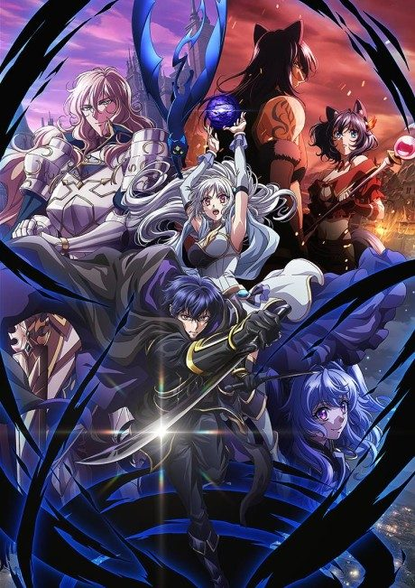
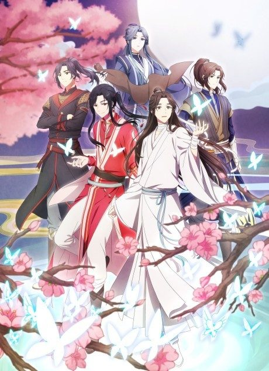

The Beginning After the End
最強の王様、二度目の人生は 何をする?
King Grey, a ruler from another world, is reborn as Arthur, a baby in a land of magic, with all his memories intact.
An original anime, so there's no book to continue with.
6.0AniList score
—Animeter, no votes yet
24episodes, 2 seasons
Rate it or report where you stopped
Is there a manga to continue?
StatusOriginal
An anime original, so there is no manga to pick up from.
Sources: AniList, MyAnimeList
More like The Beginning After the End
 Manga Vol. 157.6
Manga Vol. 157.6
 Manga Vol. 117.7
Manga Vol. 117.7

Manga Vol. 36.6 Manga Vol. 37.5
Manga Vol. 37.5
 Unclear7.6
Unclear7.6
 Unclear6.9
Unclear6.9
 Original8.0
Original8.0
 Manga Vol. 58.1
Manga Vol. 58.1
 Manga Vol. 77.0
Manga Vol. 77.0
 Unclear7.0
Unclear7.0

Original8.3 Manga Vol. 26.9
Manga Vol. 26.9